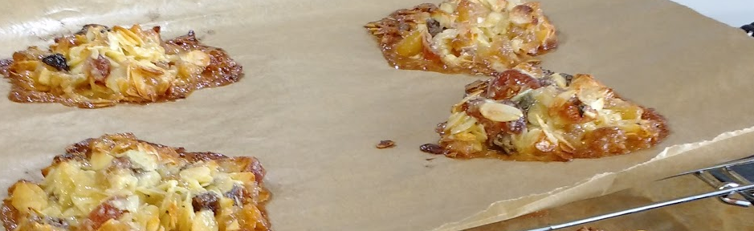

Florentines★
 Vegetarian/Vegan
Vegetarian/Vegan
Mum’s recipe

90gbutter115gcaster sugar¼ tspsalt20gplain flour115gflaked almonds30gchopped sultanas30gchopped glacé cherries30gcandied mixed peel- plus other dried/candied fruit, nuts, angelica, crystalised ginger etc
1 tbspdouble cream115gplain chocolate for coating- Baking sheets lined with greaseproof or silicone paper
Over a low heat in a high sided pan melt the butter. Then add sugar and salt and dissolve slowly without stirring too much
Add flour and stir gently until smooth
Add all other ingredients except chocolate
Drop tbspfuls on to baking paper lined tray leaving plenty of space (they spread a lot)
Bake for 15 mins at gas mark 4/180°C/160°C Fan
While still warm scrape the spread flortentines into neater piles then leave to cool completely & peel them off the paper
Melt chocolate in wide shallow bowl then dip or paint on chocolate to florentine bases
Leave chocolate side up on tray in fridge to cool